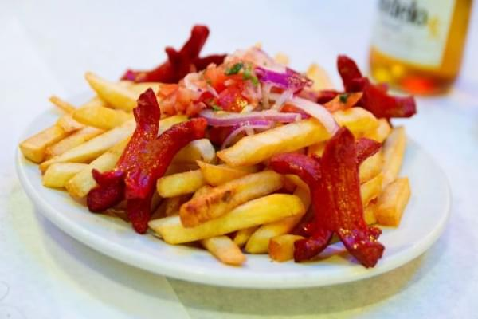

SALCHIPAPA

Descripcion
En Ecuador, es común encontrarse con las clásicas salchipapas en ferias y fiestas. Es una entrada muy rica de papas fritas con salchichas. Es un plato súper fácil de hacer. Es perfecto para los días en que no hay mucho ánimo de cocinar o cuando hay visitas.
Ingredientes
- 5 papas grandes.
- 4 salchichas.
- Aceite para freir.
- Sal.
Preparacion
- Pelar y cortar las papas en tiras gruesas y remojarlas en agua fría durante media hora. Escurrir el agua y secar bien las papas. Calentar el aceite para freír a temperatura de 325 F.
- Colocar las papas en el aceite hirviendo y cocinar hasta que estén tiernas, pero sin dorar. Sacar las papas del aceite y colocarlas encima de toallas de papel para escurrir el aceite. Dejarlas enfriar al menos durante una hora.
- Volver a calentar el aceite, esta vez a temperatura de 375 F. Colocar las papas en el aceite hirviendo y freírlas hasta que estén doradas y crujientes.
- Cortar las salchichas por la mitad, con un corte de cruz en las puntas y freírlas.
- Colocar las papas y las salchichas sobre toallas de papel para quitar la grasa y servir inmediatamente acompañados con salsa rosada y curtido de cebolla con tomate.